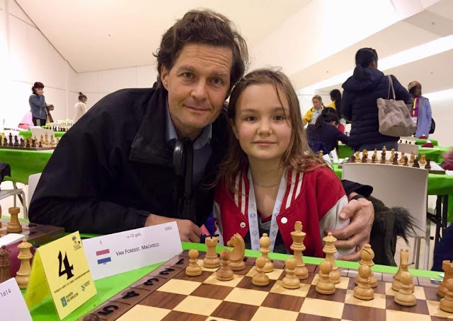
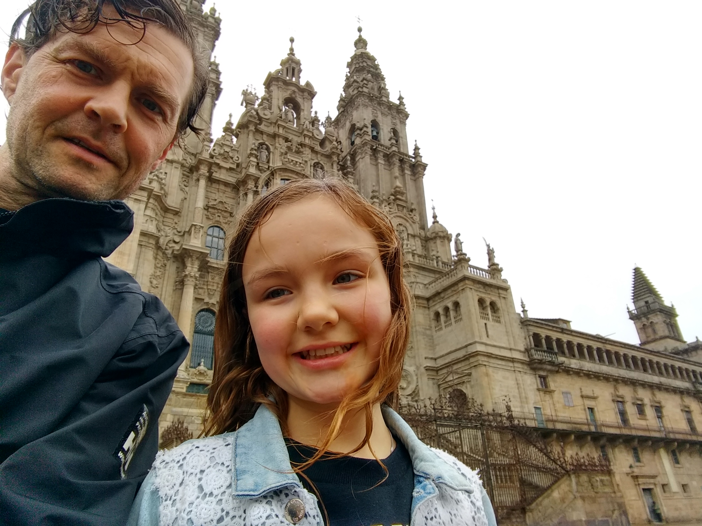
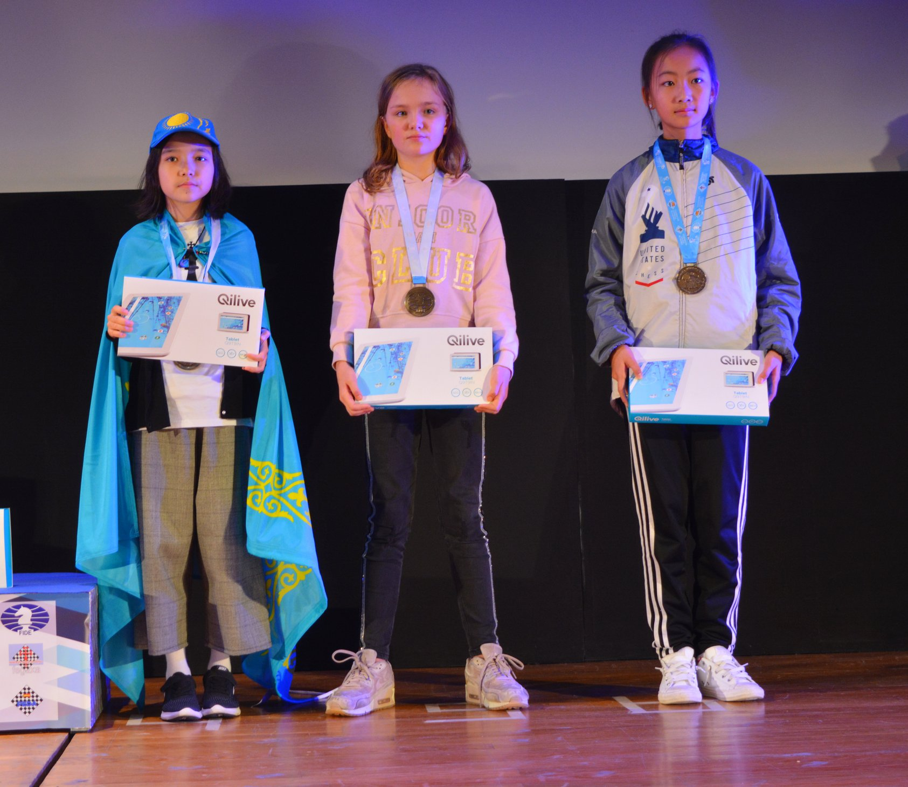

Gedeelde derde bij Wereld Kampioenschap Schaken 2018!!Ik schrijf een verslag over het WK in Santiago de Compostella. We gingen op zaterdag 3 november van Groningen naar Santiago. Ik ging eten om 7 uur in de ochtend, en toen gaf ik mijn familie een knuffel. Mijn vader en ik moesten lopend naar het station omdat moeder niet met de auto rijdt. Gelukkig was het station dicht bij. We gingen in trein; bij Schiphol gingen we naar de gate, Peng, Tommy en zijn moeder waren er al. De douane was gelukkig snel voorbij. We moesten wachten om het vliegtuig in te kunnen. We maakten ook een tussenstop in Madrid omdat er geen directe vlucht ging naar Santiago. Daar moesten we 45 minuten wachten op de bus naar het hotel. De hele reis duurde 12 uur. Yichen was er de eerste dag niet omdat hij niet met het vliegtuig mee kon in Londen. Hij kwam dus een dag later. De speelzaal (foto gemaakt door Zhaoqin Peng) We hadden een fijn hotel in Santiago. Als de zon scheen, werd het lekker warm in de kamer. We werden elke dag bediend door drie obers, en we kregen elke dag een driegangenmenu bij de lunch en het avondeten. Ik mocht maar 1 toetje per dag, bij de lunch of bij het avondeten. Bij het eten speelden Tommy, Yichen en ik vaak "ik zie ik zie wat jij niet ziet". Soms deed Petra, de moeder van Tommy mee. Mijn vader deed nooit mee, want hij kan toch nooit raden wat ik zie. De eerste dagen regende het de hele dag, van 's ochtends tot 's avonds. We namen de bus naar de speelzaal. De speelzaal lag boven op een hoge heuvel. De laatste week was het elke dag mooi weer, en dan liepen we met zijn allen naar het toernooi. De wandeling was iets meer dan 3 km. Boven bij de speelzaal had je een mooi uitzicht over de stad. We moesten de laatste kilometer de heuvel op lopen. Eerst deden Yichen, Tommy en ik een wedstrijd, maar dat mocht al gauw niet meer van Peng en mijn vader omdat we rustig aan de partij moesten beginnen. Rennen mocht wel na de wedstrijd. Cathedraal De eerste dag konden we de speelzaal niet in, en moesten we buiten in de regen wachten. Pas een dag later hoorden we dat er maar 1000 mensen in de zaal tegelijk mochten, en dat we dus niet met alle kinderen en ouders---en sommige kinderen hadden ook hun grootouders meegenomen---binnen konden zijn. Eerst moesten er ouders uit, en daarna konden er weer nieuwe kinderen bij. Sommige vaders begonnen heel hard te gillen bij de deur. Mijn vader vond het grappig, en vertelde me dat al die opwinding geen zin had. Het was een mooie speelzaal.  Met Tommy, Yichen, en Peng (foto gemaakt door Chunmei Wang) Met Tommy, Yichen, en Peng (foto gemaakt door Chunmei Wang)Mijn eerste partij had ik gemakkelijk kunnen winnen, maar ik vond het spannend en miste de winst. Daarna was ik boos, en verloor de partij. Ik vergat ook te denken aan logische zetten. Het was een slechte partij. De tweede partij won ik, maar duurde heel lang, van half vijf tot bijna tien uur 's avonds. We waren pas om half weer bij het hotel. Gelukkig had mijn vader een nieuwe jas gekocht, want hij moest buiten wachten totdat ik klaar was. De volgende 4 partijen won ik gelukkig. De vierde partij partij was een spannende partij tegen iemand uit Oekraine. In deze partij had ik een goed paard op d5 en zij een slechte loper op e7. Bij partij 7 liet ik mijn dame insluiten. Ik had een variant uitgerekend en deed per ongeluk de tweede zet in mijn variant. Dat was niet zo handig. In de 8e ronde speelde ik tegen Menon Gauri uit Amerika. Dat was ook een leuke en spannende partij waarbij mijn aanval sneller was dan haar aanval. De laatste ronde speelde ik remise tegen de uiteindelijke nummer twee. Uiteindelijk had ik 8 van de 11 punten gehaald. Hiermee behaalde ik de gedeeld derde (officieel vijfde) prijs. Ik kreeg een medaille en een tablet. Die leek mooier dan hij is. Toen ik hem uitpakte merkte ik dat het scherm heel slecht is en dat je er eigenlijk niets mee kan. Toen mijn broer Europees kampioen werd won hij een laptop met allemaal Russische tekens zodat hij er niets aan had. Prijsuitreiking Op de laatste dag hebben we een cadeau voor mijn broer Nanne gekocht, een kerk in een bol met water, en als je die op de kop houdt, sneeuwt het. Dat is een beetje gek, want in Santiago sneeuwt het nooit. Daarna hebben Yichen, Tommy en ik gespeeld in een park met een doolhof; dat had mijn vader gevonden toen hij tijdens mijn partijen aan het wandelen was. Na het middageten gingen we met de bus terug naar het vliegtuig, en via Madrid terug naar Schiphol. De trein ging pas om 11 uur 's avonds, en zat vol met dronkenlappen. Nederland had met voetval met 2-0 van Frankrijk gewonnen, en daarom hadden sommige mensen oranje haar, en waren ze aan het schreeuwen in de trein. Om half drie was ik thuis, en ging ik slapen. Het was een leuk toernooi, en erg spannend vond ik. Ik heb van Peng een paar belangrijke dingen geleerd. Dat ik in de opening langzaam moest schaken bijvoorbeeld. Dan kom je rustig in de partij. |